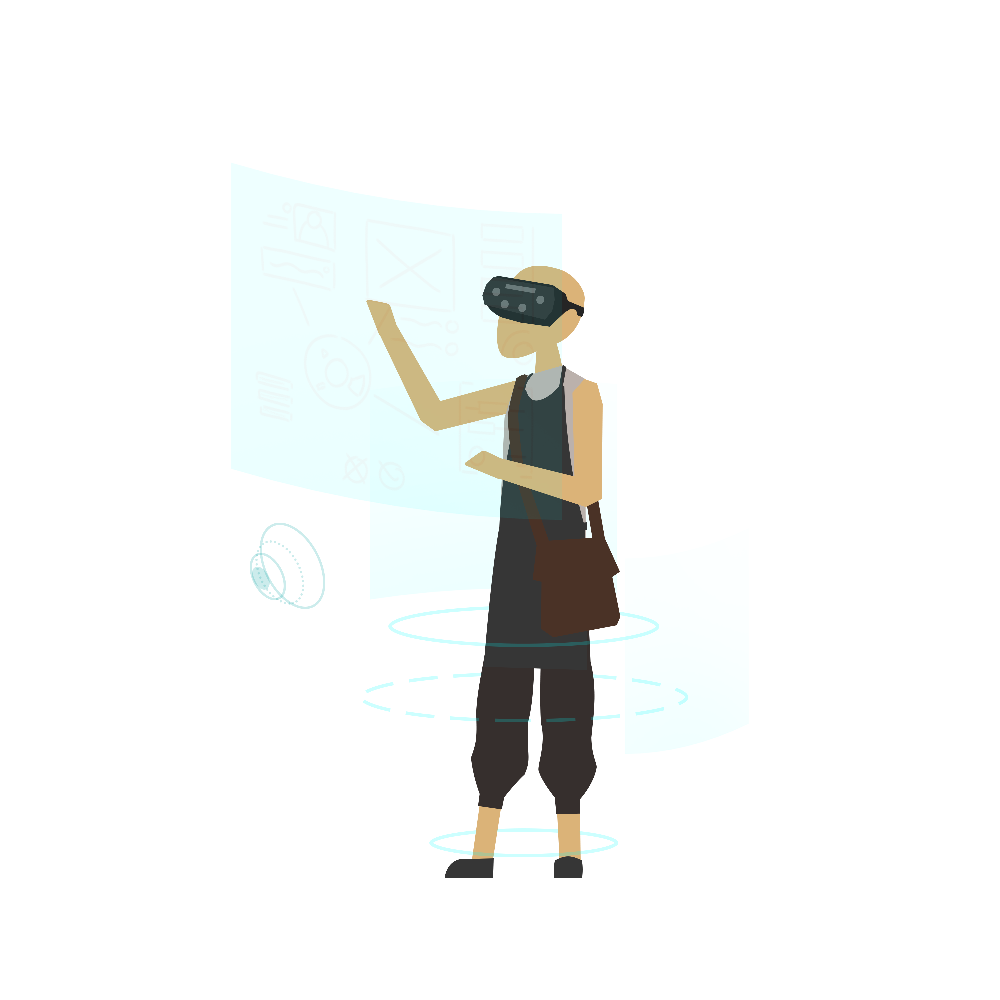

artisans of
the digital age.
We create hand-crafted interactive digital solutions that stand out.

We create hand-crafted interactive digital solutions that stand out.

We are a team of passionate software engineers and creatives simply hungry to create unique and impactful experiences. Our team dives deep into studying the target user-base, then moulding our solution around our findings, user/client feedback and data-analytics to improve and fine-tune each project to ensure a memorable experience and maximum engagment for every user.

Our team passionate about cutting edge 3D technologies such as Virtual Reality, Augmented Reality, and Mixed Reality, and how these technologies can bring applied learning to the next level. Bringing applied learning into the virtual space helps removes spacial, logistical and safety constraints. We believe that these technologies can open new doors to how we approach education and training in our organisations and schools.
Our team of passionate creatives are not only equipped with UI/UX design knowledge, but also know the "ins and outs" of our tech stack, which ensures that the UX is production-ready and robust, and breaking UI Design boundaries to create a seamless, unique and memorable experience for the user.
The core element of a game is fun. Making your solution "fun" keeps the user engaged and interested to digest your game's content, and makes the experience memorable. Our team will help you explore new ways to make your project fun and engaging.
We have built a custom backend tech-stack to host multiplayer games. Our framework handles authetication, authorisation, sessions, and account management out of the box, and proprietary features can be built on-top to create a custom backend solution for each project.
Got a million dollar idea but not enough funds to build the project? Our experienced team can help you build an MVP (minimum viable product) at lightning speed to bring for your next big pitch to an Investor / VC
We use Data Analytics to find out to find out what works and what doesnt. From finding out how popular an item is, to finding out how long users spend on the game, we use data analytics to fine tune each project to suit their respective player-base.
We create games that are ready to be deployed on most mainstream platforms, such as IOS, Android, Windows, Linux, Mac, as well as Oculus VR. Games made for a specific platform can be ported to another as Unity3D uses a universal codebase.
We can't fit everything into a website. Our team is always excited to talk about how we can help bring to life your next dream project!